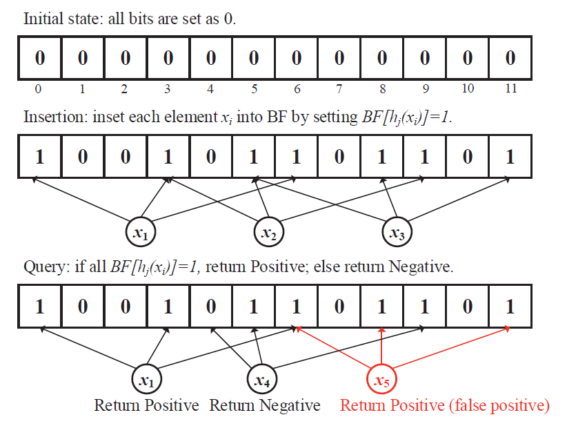

Bloom Filter
A Bloom filter is a probabilistic data structure in Redis Stack that enables you to check if an element is present in a set using a very small memory space of a fixed size.
Instead of storing all of the elements in the set, Bloom Filters store only the elements' hashed representation, thus sacrificing some precision. The trade-off is that Bloom Filters are very space-efficient and fast.
A Bloom filter can guarantee the absence of an element from a set, but it can only give an estimation about its presence. So when it responds that an element is not present in a set (a negative answer), you can be sure that indeed is the case. But one out of every N positive answers will be wrong. Even though it looks unusual at a first glance, this kind of uncertainty still has its place in computer science. There are many cases out there where a negative answer will prevent more costly operations, for example checking if a username has been taken, if a credit card has been reported as stolen, if a user has already seen an ad and much more.

Use cases
Financial fraud detection (finance)
This application answers the question, "Has the user paid from this location before?", thus checking for suspicious activity in their users' shopping habits.
Use one Bloom filter per user, checked for every transaction. Provide an extremely fast response (local latency). Replicate in different regions in case the user moves. Prevent decreasing performance with scale.
Using Redis Stack's Bloom filter for this type of application provides these benefits:
Fast transaction completion Decreased possibility for transaction to brake in case of network partitions (connection needs to be kept open for a shorter time) Extra layer of security for both credit card owners and retailers Other questions a Bloom filter can help answer in the finance industry are:
Has the user ever made purchases in this category of products/services? Do I need to skip some security steps when the user is buying with a vetted online shop (big retailers like Amazon, Apple app store...)? Has this credit card been reported as lost/stolen? An additional benefit of using a bloom filter in the last case is that financial organizations can exchange their lists of stolen/blocked credit card numbers without revealing the numbers themselves.
Ad placement (retail, advertising)
This application answers these questions:
Has the user already seen this ad? Has the user already bought this product? Use a Bloom filter for every user, storing all bought products. The recommendation engine suggests a new product and checks if the product is in the user's Bloom filter.
If no, the ad is shown to the user and is added to the Bloom filter. If yes, the process restarts and repeats until it finds a product that is not present in the filter. Using Redis Stack's Bloom filter for this type of application provides these benefits:
Cost efficient way to a customized near real-time experience No need to invest in expensive infrastructure Check if a username is taken (SaaS, content publishing platforms)
This application answers this question: Has this username/email/domain name/slug already been used?
Use a Bloom filter for every username that has signed up. A new user types in the desired username. The app checks if the username exists in the Bloom filter.
If no, the user is created and the username is added to the Bloom filter. If yes, the app can decide to either check the main database or reject the username. The query time stays the same at scale.
Using Redis Stack's Bloom filter for this type of application provides these benefits:
Very fast and efficient way to do a common operation No need to invest in expensive infrastructure
Examples:
Adding new items to the filter A new filter is created for you if it does not yet exist
> BF.ADD newFilter foo
(integer) 1
Checking if an item exists in the filter
BF.EXISTS newFilter foo (integer) 1 BF.EXISTS newFilter notpresent (integer) 0 Adding and checking multiple items BF.MADD myFilter foo bar baz 1) (integer) 1 2) (integer) 1 3) (integer) 1 BF.MEXISTS myFilter foo nonexist bar 1) (integer) 1 2) (integer) 0 3) (integer) 1 Creating a new filter with custom properties BF.RESERVE customFilter 0.0001 600000 OK BF.MADD customFilter foo bar baz Sizing Bloom filters With Redis Stack's bloom filters most of the sizing work is done for you:
BF.RESERVE {key} {error_rate} {capacity} [EXPANSION expansion] [NONSCALING] 1. False positives rate (error_rate) The rate is a decimal value between 0 and 1. For example, for a desired false positive rate of 0.1% (1 in 1000), error_rate should be set to 0.001.
-
Expected capacity (capacity) This is the number of elements you expect having in your filter in total and is trivial when you have a static set but it becomes more challenging when your set grows over time. It's important to get the number right because if you oversize - you'll end up wasting memory. If you undersize, the filter will fill up and a new one will have to be stacked on top of it (sub-filter stacking). In the cases when a filter consists of multiple sub-filters stacked on top of each other latency for adds stays the same, but the latency for presence checks increases. The reason for this is the way the checks work: a regular check would first be performed on the top (latest) filter and if a negative answer is returned the next one is checked and so on. That's where the added latency comes from.
-
Scaling (EXPANSION) Adding an element to a Bloom filter never fails due to the data structure "filling up". Instead the error rate starts to grow. To keep the error close to the one set on filter initialisation - the bloom filter will auto-scale, meaning when capacity is reached an additional sub-filter will be created. The size of the new sub-filter is the size of the last sub-filter multiplied by EXPANSION. If the number of elements to be stored in the filter is unknown, we recommend that you use an expansion of 2 or more to reduce the number of sub-filters. Otherwise, we recommend that you use an expansion of 1 to reduce memory consumption. The default expansion value is 2.
The filter will keep adding more hash functions for every new sub-filter in order to keep your desired error rate.
Maybe you're wondering "Why would I create a smaller filter with a high expansion rate if I know I'm going to scale anyway?"; the answer is: for cases where you need to keep many filters (let's say a filter per user, or per product) and most of them will stay small, but some with more activity will have to scale.
- NONSCALING If you know you're not going to scale use the NONSCALING flag because that way the filter will use one hash function less. Just remember that if you ever do reach the initially assigned capacity - your error rate will start to grow.
Total size of a Bloom filter The actual memory used by a Bloom filter is a function of the chosen error rate:
bits_per_item = -log(error)/ln(2) memory = capacity * bits_per_item
memory = capacity * (-log(error)/ln(2)) 1% error rate requires 10.08 bits per item 0.1% error rate requires 14.4 bits per item 0.01% error rate requires 20.16 bits per item Just as a comparison, when using a Redis set for membership testing the memory needed is:
memory_with_sets = capacity*(192b + value) For a set of IP addresses, for example, we would have around 40 bytes (320 bits) per element, which is considerably higher than the 20 bits per element we need for a Bloom filter with 0.01% precision.
Bloom vs. Cuckoo filters Bloom filters typically exhibit better performance and scalability when inserting items (so if you're often adding items to your dataset, then a Bloom filter may be ideal). Cuckoo filters are quicker on check operations and also allow deletions.
Performance Insertion in a Bloom filter is O(K), where k is the number of hash functions.
Checking for an element is O(K) or O(K*n) for stacked filters, where n is the number of stacked filters.
Academic sources Space/Time Trade-offs in Hash Coding with Allowable Errors by Burton H. Bloom. Scalable Bloom Filters References Webinars Probabilistic Data Structures - The most useful thing in Redis you probably aren't using Blog posts RedisBloom Quick Start Tutorial Developing with Bloom Filters RedisBloom on Redis Enterprise Probably and No: Redis, RedisBloom, and Bloom Filters RedisBloom – Bloom Filter Datatype for Redis